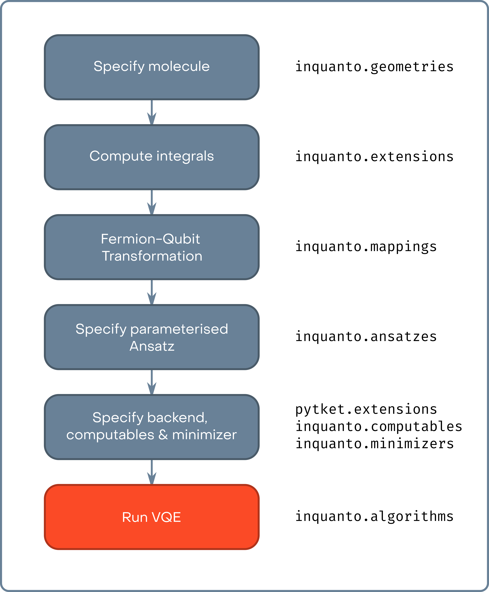

A basic VQE simulation¶
This file will introduce the basic methodology of performing quantum chemistry calculations on quantum computers using InQuanto. We focus here on a practical guide for computation using InQuanto. A discussion of the theory of VQE is available in the InQuanto docs. For this example, we will consider the calculation of the ground state electronic energy of the hydrogen molecule in a single geometric configuration, using a standard VQE methodology.
The goal of any form of electronic structure calculation is to find the eigenvalues and eigenvectors (for the ground state, the lowest eigenvalue/vector) of the second quantized electronic Hamiltonian:
where \(N\) is the number of fermionic spin-orbitals, \(\hat{a}_i^\dagger\) and \(\hat{a}_i\) are creation and annihilation operators acting on fermionic spin-orbitals, and \(h_{ij}\) and \(h_{ijkl}\) are classically precomputable integrals giving the strengths of the one and two electron interactions, respectively.
In the figure below we show the computational steps required in a canonical VQE calculation. The initial five steps here are classical preprocessing steps, whereas the final step may utilize either an actual quantum device, or a classical simulator. In order to demonstrate the simulation process, we subdivide the overall algorithm here to demonstrate the various components of InQuanto.

In the cell below we start by specifying the molecular system, which here is \(H_2\) in the minimal basis set - STO-3G.
# ########################
# MOLECULE SPECIFICATION #
# ########################
basis = "sto-3g"
geometry = [["H", [0, 0, 0]], ["H", [0, 0, 0.7122]]]
charge = 0
As is the case of classical computational chemistry we specify the atomic orbital basis, the molecular geometry, and the system charge. In InQuanto these are obtained from a driver, which runs classical electronic structure calculation to determine the reference molecular spin-orbitals and the \(h_{ij}\) and \(h_{ijkl}\) integrals in the electronic Hamiltonian (eq 1.). For example a user could run a Hartree-Fock calculation using Psi4, generate an FCIDump file, and use that to instantiate the system. However, inquanto.extensions
streamlines this process.
Here we will utilize inquanto-pyscf which is an interface to the PySCF code. This code will steer PySCF calculations and collect the results necessary to build InQuanto objects (fermion operator, state, space). The choice of extension/driver will determine the availability of methods, basis sets, etc. Don’t worry if you don’t have inquanto.extensions or PySCF - InQuanto provides some data for small test systems.
In the cell below we use a restricted Hartree-Fock calculation to build our system, running a PySCF calculation using the inquanto.extensions.pyscf.ChemistryDriverPySCFMolecularRHF driver. Some useful parameters to the PySCF drivers are frozen (to specify frozen spatial atomic orbitals) and point_group_symmetry (to enable the use of point group symmetry to reduce computational cost).
# ######################### #
# PRELIMINARY CALCULATIONS #
# ######################### #
from inquanto.extensions.pyscf import ChemistryDriverPySCFMolecularRHF
driver = ChemistryDriverPySCFMolecularRHF(basis=basis, geometry=geometry, charge=charge)
chemistry_hamiltonian, fock_space, hartree_fock_state = driver.get_system()
hartree_fock_energy = driver.mf_energy
print('HARTREE FOCK ENERGY: {}\n'.format(hartree_fock_energy))
/lib/python3.10/site-packages/pyscf/dft/libxc.py:771: UserWarning: Since PySCF-2.3, B3LYP (and B3P86) are changed to the VWN-RPA variant, corresponding to the original definition by Stephens et al. (issue 1480) and the same as the B3LYP functional in Gaussian. To restore the VWN5 definition, you can put the setting "B3LYP_WITH_VWN5 = True" in pyscf_conf.py
warnings.warn('Since PySCF-2.3, B3LYP (and B3P86) are changed to the VWN-RPA variant, '
HARTREE FOCK ENERGY: -1.1175058842043306
The inquanto.extensions.pyscf.ChemistryDriverPySCFMolecularRHF.get_system method uses PySCF to run the restricted Hartree-Fock calculation, returning the integrals in the electronic Hamiltonian as a inquanto.operators.ChemistryRestrictedIntegralOperator, a inquanto.spaces.FermionSpace object describing the fermionic Fock space, and the Hartree-Fock fermionic reference state.
In the cell below, we show how the inquanto.operators.ChemistryRestrictedIntegralOperator, which internally stores the \(h_{ij}\) and \(h_{ijkl}\) integrals, can be converted to a inquanto.operators.FermionOperator that represents the electronic Hamiltonian as a sum of terms. These terms can be viewed in a data frame table or printed. The inquanto.operators.FermionOperator contains a description of both the molecular orbital integrals, and the fermionic creation and annihilation operators. As shown in the snippet above, we can also extract the Hartree-Fock energy from the driver - this gives us an upper bound as to the electronic ground-state energy (no electron correlation).
fermionic_hamiltonian = chemistry_hamiltonian.to_FermionOperator()
print('SECOND QUANTIZED HAMILTONIAN PRINTED:\n{}\n'.format(fermionic_hamiltonian))
print('SECOND QUANTIZED HAMILTONIAN AS DATAFRAME:')
fermionic_hamiltonian.df()
SECOND QUANTIZED HAMILTONIAN PRINTED:
(0.7430177069924179, ), (-1.270292724390438, F0^ F0 ), (-0.45680735030941033, F2^ F2 ), (-1.270292724390438, F1^ F1 ), (-0.45680735030941033, F3^ F3 ), (0.48890859745047327, F2^ F0^ F0 F2 ), (0.48890859745047327, F3^ F1^ F1 F3 ), (0.6800618575841273, F1^ F0^ F0 F1 ), (0.6685772770134888, F2^ F1^ F1 F2 ), (0.1796686795630157, F1^ F0^ F2 F3 ), (-0.17966867956301558, F2^ F1^ F0 F3 ), (-0.17966867956301558, F3^ F0^ F1 F2 ), (0.1796686795630155, F3^ F2^ F0 F1 ), (0.6685772770134888, F3^ F0^ F0 F3 ), (0.7028135332762804, F3^ F2^ F2 F3 )
SECOND QUANTIZED HAMILTONIAN AS DATAFRAME:
| Coefficient | Term | Coefficient Type | |
|---|---|---|---|
| 0 | 0.743018 | <class 'numpy.float64'> | |
| 1 | -1.270293 | F0^ F0 | <class 'numpy.float64'> |
| 2 | 0.680062 | F1^ F0^ F0 F1 | <class 'numpy.float64'> |
| 3 | 0.179669 | F1^ F0^ F2 F3 | <class 'numpy.float64'> |
| 4 | -1.270293 | F1^ F1 | <class 'numpy.float64'> |
| 5 | 0.488909 | F2^ F0^ F0 F2 | <class 'numpy.float64'> |
| 6 | -0.179669 | F2^ F1^ F0 F3 | <class 'numpy.float64'> |
| 7 | 0.668577 | F2^ F1^ F1 F2 | <class 'numpy.float64'> |
| 8 | -0.456807 | F2^ F2 | <class 'numpy.float64'> |
| 9 | 0.668577 | F3^ F0^ F0 F3 | <class 'numpy.float64'> |
| 10 | -0.179669 | F3^ F0^ F1 F2 | <class 'numpy.float64'> |
| 11 | 0.488909 | F3^ F1^ F1 F3 | <class 'numpy.float64'> |
| 12 | 0.179669 | F3^ F2^ F0 F1 | <class 'numpy.float64'> |
| 13 | 0.702814 | F3^ F2^ F2 F3 | <class 'numpy.float64'> |
| 14 | -0.456807 | F3^ F3 | <class 'numpy.float64'> |
The fock_space and hartree_fock_state can be also printed to inspect which orbitals or spin-orbitals are occupied.
print('FOCK SPACE AND THE HARTREE-FOCK STATE OCCUPATIONS:')
fock_space.print_state(hartree_fock_state)
FOCK SPACE AND THE HARTREE-FOCK STATE OCCUPATIONS:
0 0a : 1
1 0b : 1
2 1a : 0
3 1b : 0
As mentioned above, InQuanto also provides a set of small test systems for where use of a full extension is undesirable. We access these using the inquanto.express module. In the cell below we repeat the above example which used inquanto-pyscf, but instead of running the Hartree-Fock we load in the precomputed data from express.
from inquanto.express import load_h5
from inquanto.spaces import FermionSpace
from inquanto.states import FermionState
h2_sto3g_data = load_h5('h2_sto3g.h5')
integrals = h2_sto3g_data['hamiltonian_operator']
fermionic_hamiltonian = integrals.to_FermionOperator()
hartree_fock_energy = h2_sto3g_data['energy_hf']
num_electrons = h2_sto3g_data['n_electron']
num_spin_orbitals = h2_sto3g_data['n_orbital'] * 2
fock_space = FermionSpace(num_spin_orbitals)
hartree_fock_state = FermionState([1] * num_electrons + [0] * (num_spin_orbitals-num_electrons))
print('SECOND QUANTIZED HAMILTONIAN:\n{}\n'.format(fermionic_hamiltonian))
print('HARTREE FOCK ENERGY: {}\n'.format(hartree_fock_energy))
print('FOCK SPACE AND THE HARTREE-FOCK STATE OCCUPATIONS:')
fock_space.print_state(hartree_fock_state)
SECOND QUANTIZED HAMILTONIAN:
(0.7430177069924179, ), (-1.270292724390438, F0^ F0 ), (-0.45680735030941033, F2^ F2 ), (-1.270292724390438, F1^ F1 ), (-0.45680735030941033, F3^ F3 ), (0.48890859745047327, F2^ F0^ F0 F2 ), (0.48890859745047327, F3^ F1^ F1 F3 ), (0.6800618575841273, F1^ F0^ F0 F1 ), (0.6685772770134888, F2^ F1^ F1 F2 ), (0.1796686795630157, F1^ F0^ F2 F3 ), (-0.17966867956301558, F2^ F1^ F0 F3 ), (-0.17966867956301558, F3^ F0^ F1 F2 ), (0.1796686795630155, F3^ F2^ F0 F1 ), (0.6685772770134888, F3^ F0^ F0 F3 ), (0.7028135332762804, F3^ F2^ F2 F3 )
HARTREE FOCK ENERGY: -1.1175058842043306
FOCK SPACE AND THE HARTREE-FOCK STATE OCCUPATIONS:
0 0a : 1
1 0b : 1
2 1a : 0
3 1b : 0
We now have our data gathered directly from inquanto.express instead of via an external quantum chemistry package. Note that here we needed to manually create FermionSpace and FermionState objects instead of deriving them from an external driver. The inquanto.express also stores the integrals as a ChemistryRestrictedIntegralOperator which we need to transform to FermionOperator.
Having found the fermionic Hamiltonian, we now must transform it into a form implementable on a quantum computer. As discussed in the documentation, the fermionic creation and annihilation operators must be mapped to strings of Pauli operators. In this example, we use the Jordan-Wigner transformation for this purpose.
# ######################### #
# QUBIT MAPPING HAMILTONIAN #
# ######################### #
from inquanto.mappings import QubitMappingJordanWigner
jw_map = QubitMappingJordanWigner()
qubit_hamiltonian = jw_map.operator_map(fermionic_hamiltonian)
print('QUBIT HAMILTONIAN:\n{}'.format(qubit_hamiltonian))
QUBIT HAMILTONIAN:
(-0.05962058276034754, ), (0.17575942918319665, Z0), (-0.23667117678035543, Z2), (0.17575942918319665, Z1), (-0.23667117678035543, Z3), (0.12222714936261832, Z0 Z2), (0.12222714936261832, Z1 Z3), (0.17001546439603182, Z0 Z1), (0.1671443192533722, Z1 Z2), (0.044917169890753894, Y0 X1 X2 Y3), (-0.044917169890753894, X0 X1 Y2 Y3), (-0.044917169890753894, Y0 Y1 X2 X3), (0.044917169890753894, X0 Y1 Y2 X3), (0.1671443192533722, Z0 Z3), (0.1757033833190701, Z2 Z3)
Here, we use the inquanto.mappings.QubitMappingJordanWigner class to perform the mapping, yielding a qubit Hamiltonian as a weighted sum of strings of Pauli X, Y and Z operators acting on qubits. The inquanto.mappings module contains several fermion-qubit mappings, which all utilize the .operator_map() method to map fermionic FermionOperators to InQuanto QubitOperators. This qubit Hamiltonian will be used to calculate the ground state energy by determining the expectation value of each term in the sum. While the Hamiltonian alone is sufficient for some quantum algorithms (e.g. phase estimation), here we consider a VQE calculation where the preparation of an ansatz state is required.
In the cell below, we use the canonical UCCSD Ansatz – inquanto.ansatz.FermionSpaceAnsatzUCCSD. When instantiated, the Ansatz object contains a tket circuit object corresponding to the generation of the parameterized Ansatz state. We can use the .generate_report() method of the Ansatz object to give a quick report on some of the quantum resource costs associated with generating the Ansatz – the circuit depth, the overall gate count, the number of Ansatz parameters and the number of qubits required. Further diagnostics can be obtained by examining the tket circuit object itself, ansatz.state_circuit. Here we give an example of finding the number of CNOT gates in the circuit. Further information about how to analyze tket circuits can be found in the tket documentation. Two final steps are needed before a VQE simulation can be run - determining how the quantum computer itself will be simulated and setting up the classical optimizer.
# ##################### #
# CREATE A UCCSD ANSATZ #
# ##################### #
from inquanto.ansatzes import FermionSpaceAnsatzUCCSD
from pytket import Circuit, OpType
ansatz = FermionSpaceAnsatzUCCSD(fock_space, hartree_fock_state)
print('ANSATZ REPORT:')
print(ansatz.generate_report())
print('\n 2-qubit GATES: {}'.format(ansatz.circuit_resources()['gates_2q']))
print("\n ANSATZ GENERATION CIRCUIT:")
ansatz.state_circuit
ANSATZ REPORT:
{'ansatz_circuit_depth': 58, 'ansatz_circuit_gates': 110, 'n_parameters': 3, 'n_qubits': 4}
CNOT GATES: 22
ANSATZ GENERATION CIRCUIT:
[X q[0]; X q[1]; V q[2]; S q[3]; Sdg q[0]; S q[2]; H q[3]; Vdg q[0]; CX q[1], q[2]; S q[3]; Sdg q[2]; V q[3]; CX q[2], q[0]; V q[3]; Rz(1.0*s0/pi) q[0]; H q[2]; S q[3]; Rz(-1.0*s0/pi) q[2]; H q[2]; CX q[2], q[0]; V q[0]; S q[2]; S q[0]; CX q[1], q[2]; S q[0]; S q[1]; Sdg q[2]; H q[0]; H q[1]; Vdg q[2]; S q[0]; S q[1]; S q[2]; V q[0]; V q[1]; H q[2]; S q[0]; Sdg q[1]; S q[2]; H q[0]; Vdg q[1]; V q[2]; S q[0]; CX q[2], q[3]; V q[0]; Sdg q[3]; CX q[3], q[1]; Rz(1.0*s1/pi) q[1]; H q[3]; Rz(-1.0*s1/pi) q[3]; H q[3]; CX q[3], q[1]; V q[1]; S q[3]; S q[1]; CX q[2], q[3]; S q[1]; S q[2]; Sdg q[3]; H q[1]; H q[2]; Vdg q[3]; S q[1]; S q[2]; S q[3]; V q[1]; V q[2]; H q[3]; CX q[0], q[1]; S q[3]; CX q[0], q[2]; V q[3]; CX q[0], q[3]; V q[0]; Rz(-0.25*d0/pi) q[0]; CX q[3], q[0]; Rz(0.25*d0/pi) q[0]; CX q[2], q[0]; Rz(-0.25*d0/pi) q[0]; CX q[3], q[0]; Rz(0.25*d0/pi) q[0]; CX q[1], q[0]; Rz(0.25*d0/pi) q[0]; CX q[3], q[0]; Rz(-0.25*d0/pi) q[0]; CX q[2], q[0]; Rz(0.25*d0/pi) q[0]; CX q[3], q[0]; Rz(-0.25*d0/pi) q[0]; CX q[1], q[0]; Vdg q[0]; CX q[0], q[3]; CX q[0], q[2]; S q[3]; CX q[0], q[1]; S q[2]; H q[3]; S q[0]; S q[1]; H q[2]; S q[3]; H q[0]; H q[1]; S q[2]; V q[3]; S q[0]; S q[1]; V q[2]; V q[0]; V q[1]; ]
To simulate the quantum computer, we connect to a backend using a pytket extension. The backends are where the quantum circuit is run or simulated. In this case, we are using the Qiskit state vector simulator through the use of pytket.extensions.qiskit.
There are two broad approaches to simulating the action of a quantum circuit which differ in how measurement is treated. Firstly, the full state of the qubits may be tracked and returned as a vector of complex amplitudes – state vector simulation. Alternatively, we can build up the probability distribution of states through repeated measurement of the qubit register – shot based simulation. This latter approach is a more faithful simulation of how current quantum computation is performed, but requires many repetitions to obtain accurate statistics of the desired quantity. The type of simulator influences how InQuanto handles the result returned by the backend. The Qiskit AerStateBackend here performs a state vector simulation.
Finally, we also need to choose how the classical optimization of Ansatz parameters is performed. This functionality is provided by the inquanto.minimizers module. In this case, we use Scipy to perform the minimization, which is interfaced through inquanto.minimizers.scipy. The choice of optimization algorithm and the settings can be passed through to Scipy. Here, we have requested an L-BFGS-B optimizer.
# ############################### #
# SIMULATOR AND OPTIMIZER DETAILS #
# ############################### #
# install pytket-qiskit using e.g. pip install pytket-qiskit if necessary
from pytket.extensions.qiskit import AerStateBackend
from inquanto.minimizers import MinimizerScipy
backend = AerStateBackend()
minimizer = MinimizerScipy(method="L-BFGS-B")
To make the first VQE simulation simple we use the run_vqe(...) function from the inquanto.express that is suitable to run with Qiskit state vector simulator. In order to perform much more customized VQE experiments, it is recommended to use AlgorithmVQE and the corresponding Computables and Protocols.
After all these, we can call the run_vqe(...) function that also executes the simulation:
# ############ #
# OPTIMIZATION #
# ############ #
from inquanto.express import run_vqe
vqe = run_vqe(ansatz, qubit_hamiltonian, backend=backend, with_gradient=True, minimizer=minimizer)
report = vqe.generate_report()
print('\nVQE ENERGY: {}'.format(report['final_value']))
print('\nVQE REPORT: ')
vqe.generate_report()
# TIMER BLOCK-0 BEGINS AT 2023-11-29 09:48:03.249868
# TIMER BLOCK-0 ENDS - DURATION (s): 0.3071886 [0:00:00.307189]
VQE ENERGY: -1.1368465754720527
VQE REPORT:
{'minimizer': {'final_value': -1.1368465754720527,
'final_parameters': array([-0.107, 0. , 0. ])},
'final_value': -1.1368465754720527,
'initial_parameters': [{'ordering': 0, 'symbol': 'd0', 'value': 0.0},
{'ordering': 1, 'symbol': 's0', 'value': 0.0},
{'ordering': 2, 'symbol': 's1', 'value': 0.0}],
'final_parameters': [{'ordering': 0,
'symbol': 'd0',
'value': -0.10723347230091572},
{'ordering': 1, 'symbol': 's0', 'value': 0.0},
{'ordering': 2, 'symbol': 's1', 'value': 0.0}]}
The .generate_report() provides the details of the result. We can see here that the VQE simulation has successfully converged, giving an energy of -1.1368 Hartrees – a big improvement over the Hartree-Fock energy of -1.1175 Ha! This tutorial forms the basic workflow of running simple VQE calculations in InQuanto. From here, a few things can be very easily switched up - for instance, you could try:
Changing the molecule to another small example (such as LiH)
Changing the qubit mapping (for instance, to
inquanto.fock_space.QubitMappingBravyiKitaev) to see the impact on circuit gate counts.Changing the Ansatz state (for instance, to
inquanto.ansatz.FockSpaceAnsatzUCCGD) to see the impact on the energy.Changing the optimizer method.
Restricting the active space with the
frozenparameter in the driver, or enabling point group symmetry withpoint_group_symmetry=Trueto see the impact on the number of Ansatz parameters.
Other topics – for instance, using other quantum algorithms, or fragmentation methods to look at larger systems – will be covered in the following tutorials.